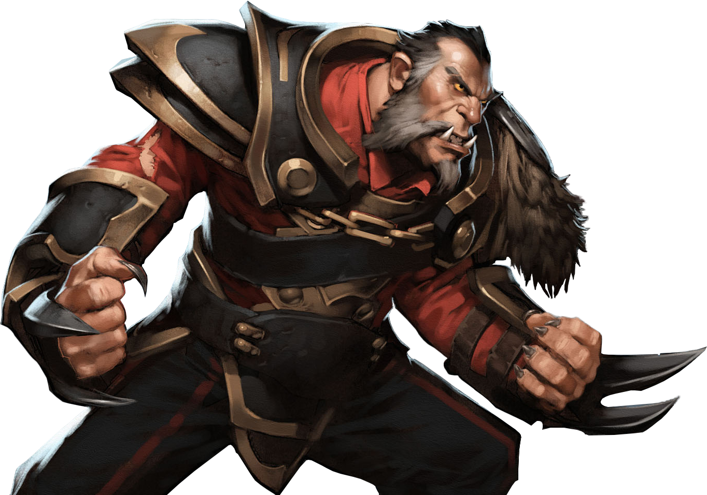

Find the most
Popular players
At the starting point of this project we were courious about the most known and viral players. Therefore we applied several centrality analysis, which will provide us some interesting insights about the pro players in the world of dota. In order to be able to apply these techniques we needed to extract the giant connected component because centrality only works with a fully connected graph.

The whole graph can be seen on the left side, and the extracted gianc connected component can be seen on the right side.
From now on, we will only work with the GCC. We calculated betweenness centrality, eigenvector centrality and degree centrality.
The results of betweenness centrality:
 Results for Eigenvector centrality: And for the degree centrality:We provided some links, so if you are interested in these players, you can check their statistics there.